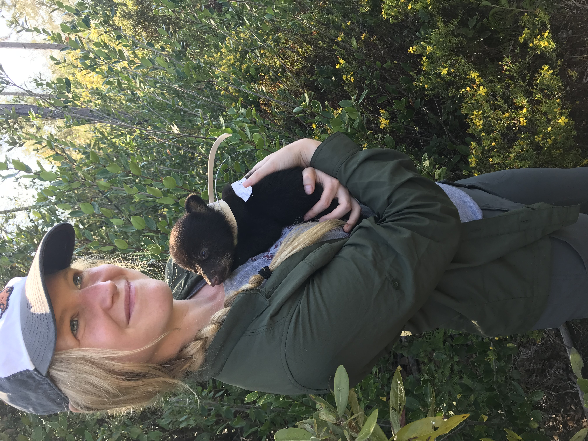
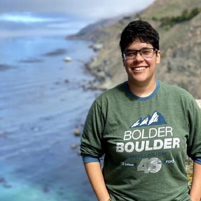
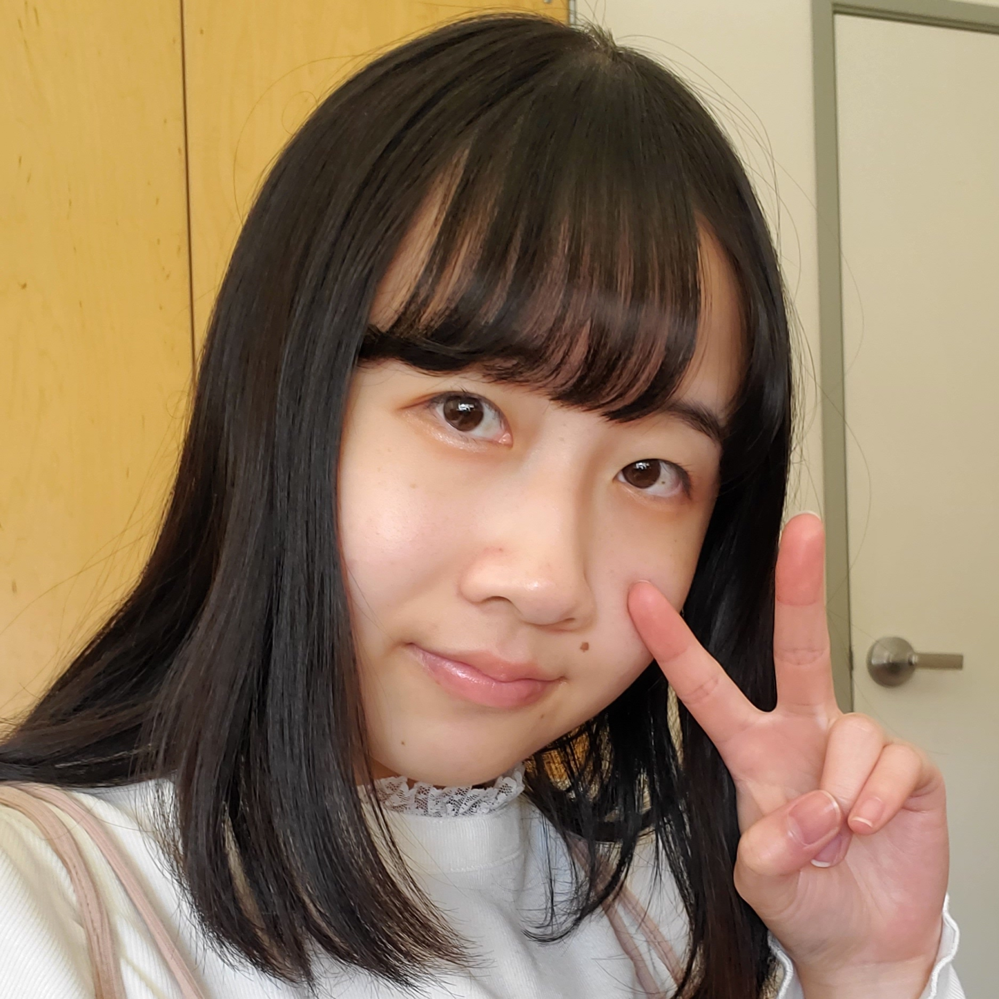
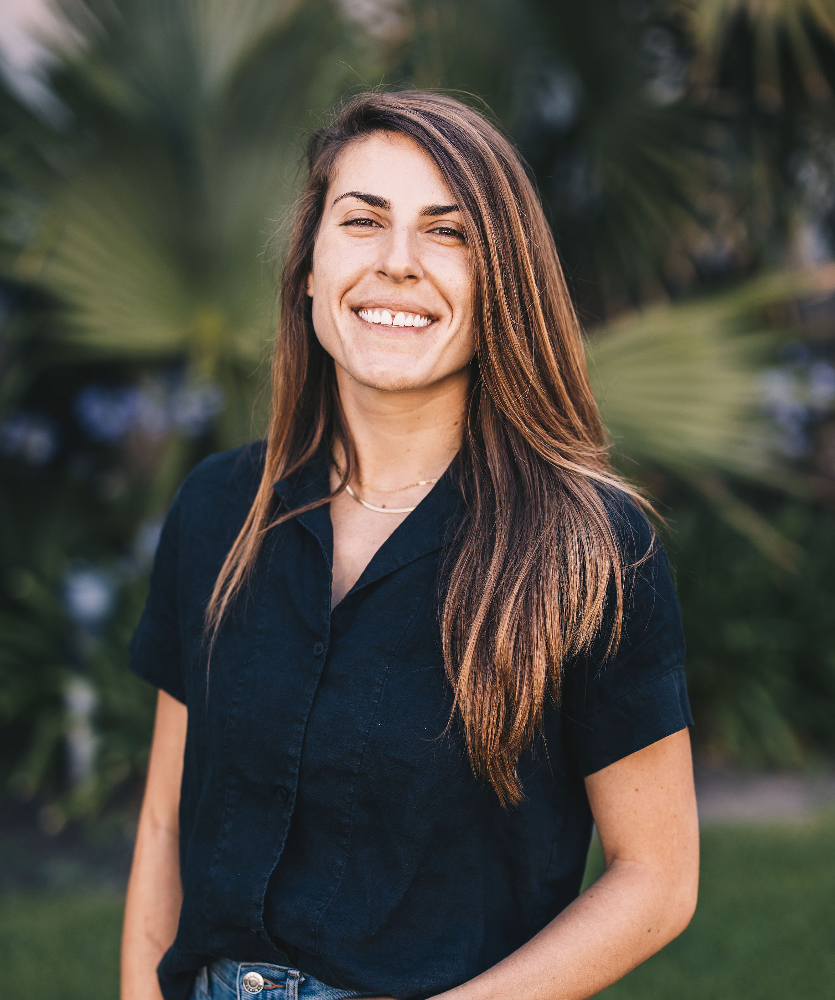

Our Team
Nick Lyon
njlyon0.github.io – njlyon0 – @scilyon – lyon@nceas.ucsb.edu

Nick focuses on supporting LTER synthesis working groups in the acquisition and management prerequisite to analysis and visualization. Nick is a trained community ecologist with a special interest in interacting communities of plants and insects and has extensive experience taking “raw” field-collected data and readying it for hypothesis testing in a rigorous, transparent way. Nick completed his M.Sc. in Ecology and Evolutionary Biology at Iowa State University
Goals: Nick aims to refine his R package writing skills and become a more well-rounded programmer by increasing his competency with non-R programming languages.
Althea Marks
theamarks – marks@nceas.ucsb.edu

Althea is a Data Science Fellow at the Arctic Data Center data repository. She is working on the “scythe” R package to improve the process of searching for dataset citations in scientific publication databases. Althea comes from an environmental science, water quality, and marine ecology background; she got the reproducible and open science bug while analyzing her graduate research and teaching herself to code.
Goals for this website:
- Work collaboratively with many people using git/github
- Learn how to create a webpage populated by a different github repo
- Dig deeper into Quarto formatting
- Use git in the command line for this website
Camila Vargas Poulsen
camilavargasp – @CamVargasP – camilavargas@ucsb.edu

Camila is working towards building the Palmyra Atoll Data Library (PADL). She serves as the data manager, rescuing data collected at Palmyra Atoll to document and publish these data packages into the Environmental Data Initiative repository (EDI). As a data and project manager, Camila enjoys developing efficient workflows for cleaning, organizing, and documenting data, making it ready to be analized and ensure long-term preservation. Camila holds a Masters in Environmental Science & Management from the Bren School at UCSB.
Data Science Tools: RStudio and Github
data-science-chats goals: Learn new tools and packages. Staying abreast of best practices for open data science. Practice teaching data science tools. Support each other in our data science journey.
Goals for this website: Get familiar with Quarto. Use Github collaboratively. Learn from each other things we discover along the process of creating this website. Create a website that host small data science sparks from our day to day work.
Haley (Epperly) Fox
haleyepperlyfox – epperly@nceas.ucsb.edu

Haley is a Data Scientist at the National Center for Ecological Analysis and Synthesis (NCEAS). She is working on a collaborative and interdisciplinary project focused on the environmental justice implications of global food trade. Haley has a M.Sc. in Interdisciplinary Ecology from the School of Natural Resources and the Environment at University of Florida. In addition to lots of ecological fieldwork and analysis, Haley also spent four years working for the Oregon Department of Fish and Wildlife understanding how people have been impacted by marine reserves.
Goals for this website: Website goals include collaborating with others in Github, understanding and using more of Github’s capabilities, using the terminal to interact with Github, and learning more about Quarto’s capabilities.
Daphne Virlar-Knight
dvirlar.com – dvirlar2 – @dvirlar2 – virlar-knight@nceas.ucsb.edu

Daphne helps curate metadata for every dataset submitted to the National Science Foundation’s Arctic Data Center, the primary data and software repository for the Arctic section of the Office of Polar Programs. While Daphne’s background is in conservation, environmental science, and management, that experience coalesces around the principles of open data science and reproducibility. Daphne received a master’s degree from the Bren School of Environmental Science & Management.
Angel Chen
angelchen7 – anchen@nceas.ucsb.edu

Angel supports LTER synthesis working groups by developing data pipelines and reproducible analytical workflows to integrate various sources of data. Angel previously worked as a data curator for the Arctic Data Center, helping researchers archive and store their data. She has recently completed a B.S. in statistics & data science at the University of California, Santa Barbara.
Goals for this website: Angel strives to learn more about how to collaborate with others using git/GitHub and Quarto. She also wants to practice documenting and sharing any useful tips, tricks, tools, and skills along the way!
Samantha Csik
samanthacsik.github.io – samanthacsik – @SamanthaCsik – scsik@ucsb.edu

Sam is the NCEAS Data Training Coordinator where she’s working to develop and teach data science training curricula for the Master of Environmental Data Science (MEDS) program and other data science initiatives across NCEAS and UCSB. She is also a co-organizer of R-Ladies Santa Barbara, a local data science group which works to promote diversity in the R community. In her spare time, you’ll typically find her hiking with her pup or cooking family dinners with friends.
data-science-chats goals: Learn with and from colleagues (everyone at NCEAS is seriously so cool, kind, and willing to share exciting data science knowledge). Also excited to break things 😈 and fix them 😇 together in a safe and supportive space — it’s always scary when things go awry in the middle of a project, but #data-science-chats has provided an awesome opportunity to do so in a (semi-)controlled way so that we can all learn workflows and strategies along the way.
Goals for this website: Learn more about Quarto and compile all the fun tips and tricks in one easy-to-find spot — trying to find the motivation to blog more often, and this is a great place to start! Become more comfortable with git and the command line.